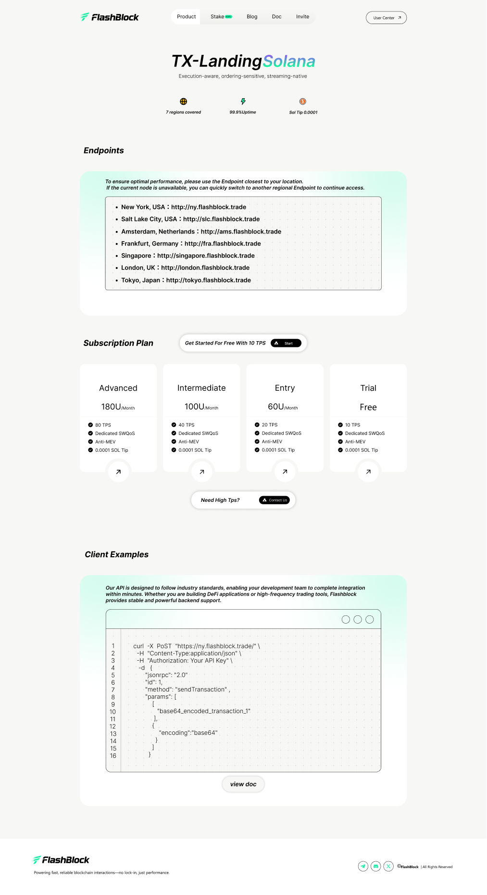
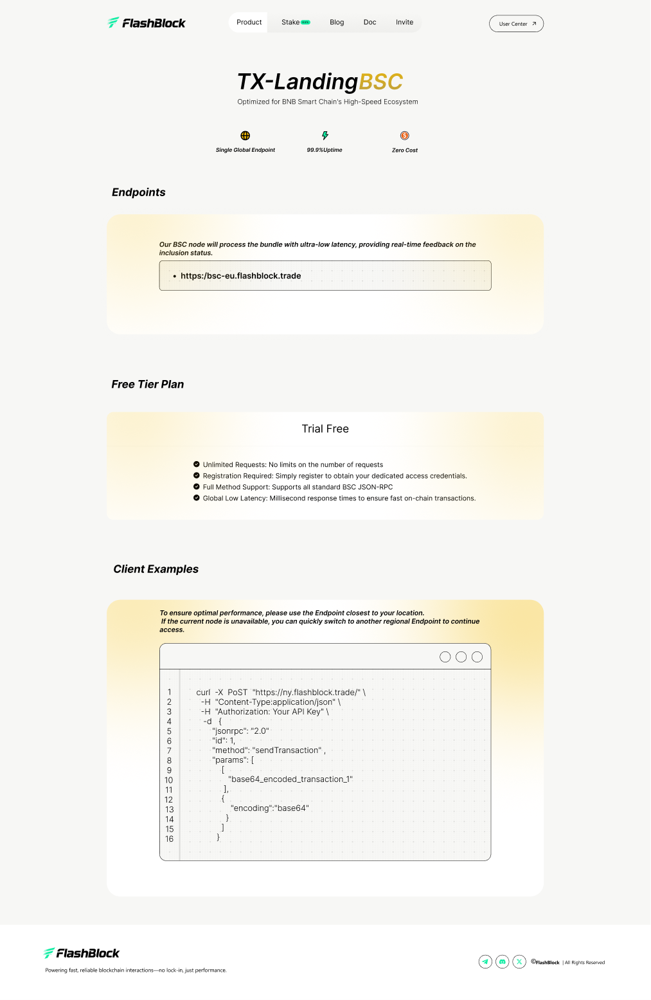

Chapter 01 · TX-Landing
第一步先建立产品入口认知
在设计推进上，首页阶段优先解决“用户如何快速理解这是什么产品”这个问题。因此这一部分承担的是入口认知建立的任务，需要在第一屏同时传达产品气质、核心能力与使用场景，让后续更复杂的机制与内容都有一个清晰的理解起点。
- 先用 高识别度首屏 建立产品记忆点，让用户快速形成第一印象。
- 信息重点聚焦在 多链交易能力 与 系统化工具组合，避免入口阶段信息分散。
- 通过完整界面截图强化 产品成熟度 与 真实使用场景 的感知。

